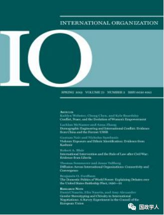
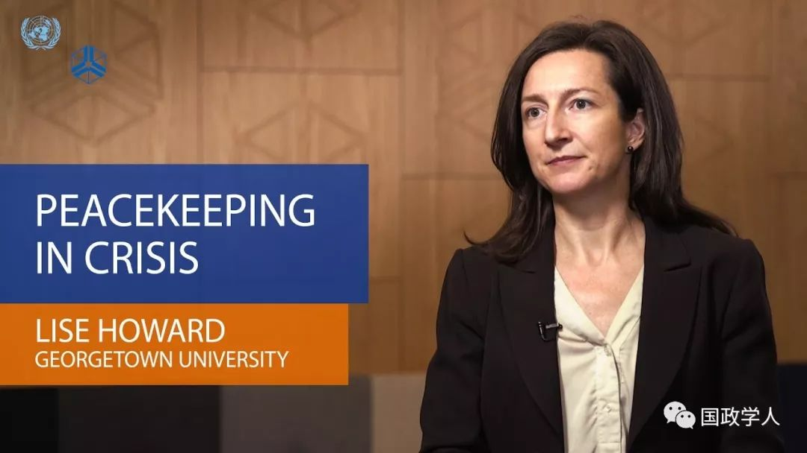
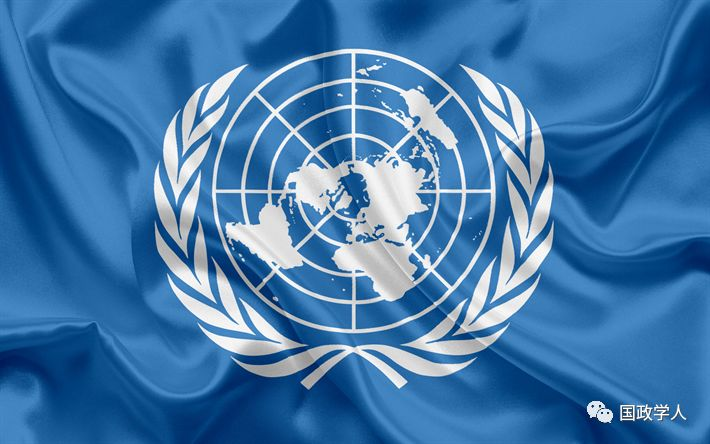
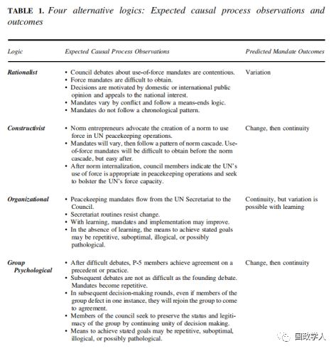

收录于合集

简 介
【作者】 丽思·M·霍华德（Lise Morjé Howard），乔治城大学政府学院副教授，研究领域包括国际关系、比较政治学、内战问题、维和行动以及巴尔干半岛和撒哈拉以南非洲地区研究。安佳里·K·达亚尔（Anjali Kaushlesh Dayal）福德姆大学政治学系国际政治学助理教授，研究领域包括国际组织与和平进程、人权和安全之间的关系，特别关注联合国维和行动研究。
【编译】 邢 戎
【校对】 彭小朵、刘孝玉
【审核】 丁伟航
【来源】 International Organization 72, Winter 2018, pp. 71–103；https://doi.org/10.1017/S0020818317000431 ；Published online: 04 December 2017
【期刊】 《国际组织》（International Organization），国际关系学顶尖期刊，涵盖多领域的国际事务，理论性较强。研究主题包括:外交政策、国际关系、比较政治经济学、安全政策、环境问题争端和解决、欧洲一体化、联盟模式和战争、谈判和解决冲突、经济发展以及国际资本流动等。

联合国维和行动的武力运用问题研究
The Use of Force in UN Peacekeeping

（Lise Morjé Howard）
（Anjali Kaushlesh Dayal）
内容提要
联合国维和行动的本意不是使用武力，联合国安理会五大常任理事国（P-５）也并不希望联合国发展一支军事力量。然而，从1999年开始，根据《联合国宪章》第七章，联合国安理会已授权在多边维和行动中使用武力，即使这无益于实现安理会所声明的维持国际和平的目标。无论是规范性变化的建构主义解释，还是对既定目标的理性追求，抑或是组织化进程，都不能解释这种频繁的武力授权。本文借鉴了小团体心理学， **提出一个全新的理论命题：频繁的武力授权是为了 “保持团体性（group preserving）动力”。**P-5正是通过对使用武力的授权来保证本国和集体地位及合法权。一旦成员国达成某项协议，即使协议已不符合新背景，是次优的，甚至不合逻辑、有明显差错的，该协议也将适用于未来的几轮谈判。对其成就的高度评价和协议的重复确认都是为了“保持团体动力”。本文运用了所有维和任务的原始数据,以及对维和官员（包括P-5的代表）的数十次采访资料，并运用了理性主义者、建构主义者、组织学和心理学的逻辑来进行数据评估。

文章导读
**1
** 引言
1948年，维和之父提出，运用武装力量可以不是为了赢得战争，而是为了保卫和平。如今，在国际冲突地带，联合国维和部队已发展成为一支最有力的派遣力量。而各国对维和行动的武力运用始终持有怀疑态度。建立一支联合国领导的武装力量并不符合P-5任何一个国家的国家利益，联合国秘书处和部队派遣国也倾向于抵制第七章的授权，因为运用武装力量所带来的消极影响也是多方面的： 武装干预破坏了维和行动声称的无差别平等，使得维和人员和人道主义志愿者遭受袭击，用武力方式达成目标也与人们对联合国的期望大相径庭。
即使P-5之间存在复杂分歧，但作为一个团体，要增强个体地位就必须增强团体地位，而要做到这样，（阻止其他国家成为常任理事国的）排他性是远远不够的，还需要合法性的加持。保持合法性，就需要对使用武力问题作出统一决定。为了做出决策，成员必须保持人数较少并定期合作，否则联合国成员国将在其他组织中寻求合作。一旦成员国就一项解决方案达成一致，他们的一致意见就会在未来的几轮谈判中得到应用——即使该解决方案不符合新环境。总而言之， **拥有一票否决权的 P-5通过阻止成员扩增和保持决策特权来努力维持其地位与合法性。保持团体性的本质在于协议背后隐含的特权，而不是协议本身。**所以本文的研究视角从组织领域延伸到更微观的小组决策层面上，认为小团体心理学能够很好地对这一现象加以解释，并提出了“保持团体性动力”的新概念。
**2
** 小团队社会心理学与“保持团队性”概念
社会心理学对团体性行为有着广泛研究。“团体”并不是个体的简单相加或松散联合。由于其成员间的频繁互动、与非团体成员间的清晰界限，以及团体的共同目标三大特征，团体表现出鲜明的实体性（entitativity）。 冷战以来，有相当证据表明联合国安理会是一个高度实体性的团体：
· 数据表明，P-5成员内部的互动要远远多于与非成员国的互动
· 安理会改革的辩论已然停滞，P-5对接纳新成员均持负面态度
· 保持权力地位是P-5共同的首要目标，超越“维和”国际义务
拒绝改变和联合决策往往会产生有缺陷的集体决策。文章从而给出了两个例证（part1和part2），进一步阐述P-5的首要目标并无助于维持和平本身（part 1），而是在于通过维和行动授权来加强地位和合法性（part 2）。
**3
**
研究方法
**文章数据的主要来源包括：联合国安理会决议、安理会会议纪要和对参与维和行动多年的精英人士的近 40次采访。**运用定性的方法来解释以下两个现象：一是1999年授权武力干涉维和行动的转变，以及此后这一授权的反复出现(或连续性)。文章分别从 工具理性、建构主义、组织化进程和团体心理学的逻辑中寻找证据来证实或否定命题的合理性 。
**4
**
从四种理论视角下观察到的因果关系
从现实主义理论视角看： 第一，安理会关于使用武力的授权的辩论始终有争议；第二，那么行动将很难得到授权；第三，决策会受到国内、国际舆论的推动，并将符合P-5国家的利益，第四，任务授权始终以目标- 手段为导向，实现目标的手段将根据问题性质而有所不同；第五，任务不遵循时间顺序。由此推导出武力授权应该是随时变化的。
从建构主义理论视角看， 规范倡导者提倡建立一个在联合国维和行动中使用武力的规范。维和任务各有不同，但可以遵循同一个规范模式。在规范模式形成前很难获得使用武力的授权，形成后就容易了。这样的规范模式形成后，安理会成员国会认为联合国在维和行动中使用武力是恰当的，并寻求加强联合国使用武力的能力。由此推导出武力授权在形成后会一直延续，并自我加强。
从组织理论来看， 维和任务由联合国秘书处向安理会下达，但秘书处的惯例是抵制变革。随着“组织学习”的过程，这个授权下达和执行的状况可能会改善。但在缺乏“组织学习”的情况下，实现既定目标的方法可能是重复的、次优的、不合逻辑的，或者可能是病态的。由此推导出武力授权会一直延续，但随着“组织学习”过程也许会有变化。
从团体心理学角度看， 一项协议初始谈判往往是最艰难的，一旦形成惯例做法后就容易多了，因此P-5成员倾向于重复过去的决策。随后的决策过程中，即使在个别案例中出现分歧，他们也会达成一致意见。P-5成员寻求通过持续统一的决策来保持集团的地位和合法性，即使实现既定目标的方法可能是重复的、次优的、不合逻辑的，或者可能是病态的。由此推导出武力授权在形成后会一直延续，并自我加强。

**5
**
** ** ** ** ** ** ** ** ** 结 论******************
本文从理性主义、建构主义、组织理论和心理学理论中的推导的因果逻辑来观察，发现1999年的转变很大程度上归因于建构主义逻辑，然而团体心理学能够更好地解释1999年后这一转变得以维持的原因。授权任务的重复是“保持团体性”动力的结果： 保持现状和一个高度实体团体的合法性、达成和重复的协议优先于协议的内容。尽管结果可能是次优、不合逻辑，甚至是病态的。 学界下一步可以研究联合国安理会其他领域的“保持团体性”动力现象。
维和行动被认为是维护和平的有力举措，维和部队部署的目的是“帮助所有人，不伤害任何人”。而今天，维和行动正处于十字路口：虽然“旨在限制使用武力”，但某些时候却在“推动战争”，维和部队越来越多地受到攻击，联合国维和人员的公正性也受到威胁。 《联合国宪章》第七章对武力运用的授权并不是失败的唯一原因，如何才能更有效地维持和平，这也有待进一步研究 。目前对第七章授权的坚持既不符合维护安全的国际利益，也不符合拯救生命和结束内战的维和初心。
_ ** _ 本文由国政学人平台独家编译首发**
更多阅读
【重磅速递】约瑟夫·奈：美国霸权的兴衰：从威尔逊到特朗普 | 国政学人
【重磅推荐】巴里·布赞：英国学派视角下的中国崛起 | 国政学人